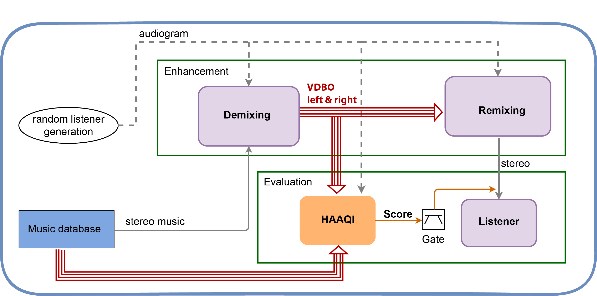
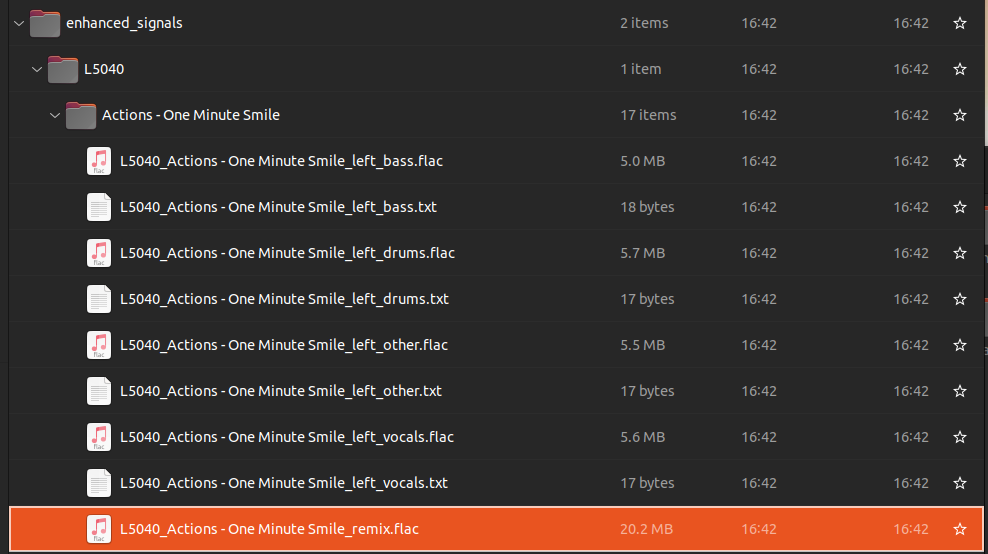

Task1#
This tutorial walks through the process of running the CAD1 Task1 baseline using the shell Interface
The python and shell scripts included in the repository make use of Hydra and Submitit, two technologies which streamline the configuration and parallel operation of python code on both local and high performance computing (HPC) environments.
The use of hydra for configuration allows for the existing shell scripts to be easily redirected to include new audio data and modify the various parameters of the recipe.
1. Cloning the Clarity Repository#
We first need to install the Clarity package.
%%capture
!git clone --quiet https://github.com/claritychallenge/clarity.git
%cd clarity
!git checkout v0.3.2
%pip install -e .
%cd recipes/cad1/task1/baseline
2. Getting the demo data#
We will be using music audio and listener metadata.
%%capture
import gdown
!gdown 10SfuZR7yVlVO6RwNUc3kPeJHGiwpN3VS
!mv cadenza_data_demo.tar.xz recipes/cad1/task1/baseline
!tar -xvf cadenza_data_demo.tar.xz
!rm cadenza_data_demo.tar.xz
3. Baseline#
The baseline recipe is divided into 2 stage; Enhnacement and Evaluation
{kind=link}
3.1 Enhancement#
The enhancement script contains several key functions
3.1.1 Enhance#
The main function that orchestrate the demixing and remixing.
It takes the config.yaml as input parameter
@hydra.main(config_path="", config_name="config")
def enhance(config: DictConfig) -> None:
"""
Run the music enhancement.
The system decomposes the music into vocal, drums, bass, and other stems.
Then, the NAL-R prescription procedure is applied to each stem.
Args:
config (dict): Dictionary of configuration options for enhancing music.
Returns 8 stems for each song:
- left channel vocal, drums, bass, and other stems
- right channel vocal, drums, bass, and other stems
"""
3.1.2 Decompose Signal#
It takes a music signal and a pretrained model decompose the signal into eight stems (VDBO).
The baseline takes either the demucs or the Open-UnMix model acording to the value of the
separator.modelparameter in the config.yamlThe function has the left and right audiograms as input parameters. This is to show that one could train a model using this information to produces a personalizes decomposition.
def decompose_signal(
model: torch.nn.Module,
model_sample_rate: int,
signal: np.ndarray,
signal_sample_rate: int,
device: torch.device,
sources_list: list[str],
left_audiogram: np.ndarray,
right_audiogram: np.ndarray,
normalise: bool = True,
) -> dict[str, np.ndarray]:
"""
Decompose signal into 8 stems.
The left and right audiograms are ignored by the baseline system as it
is performing personalised decomposition.
Instead, it performs a standard music decomposition using the
HDEMUCS model trained on the MUSDB18 dataset.
Args:
model (torch.nn.Module): Torch model.
model_sample_rate (int): Sample rate of the model.
signal (np.ndarray): Signal to be decomposed.
signal_sample_rate (int): Sample frequency.
device (torch.device): Torch device to use for processing.
sources_list (list): List of strings used to index dictionary.
left_audiogram (np.ndarray): Left ear audiogram.
right_audiogram (np.ndarray): Right ear audiogram.
normalise (bool): Whether to normalise the signal.
Returns:
Dictionary: Indexed by sources with the associated model as values.
"""
3.1.3 Process Stems for Listeners#
Function that takes the stems from the demixing and process them to the target listener.
In the baseline it applies NAL-R prescription to each stem
The use of this function may becomes unnecessary in the case of having a separation model that performs a personalized decomposition. E.g., the model applies the NAL-R amplification as part of the decomposition.
def process_stems_for_listener(
stems: dict,
enhancer: NALR,
compressor: Compressor,
audiogram_left: np.ndarray,
audiogram_right: np.ndarray,
cfs: np.ndarray,
apply_compressor: bool = False,
) -> dict:
"""Process the stems from sources.
Args:
stems (dict) : Dictionary of stems
enhancer (NALR) : NAL-R prescription hearing aid
compressor (Compressor) : Compressor
audiogram_left (np.ndarray) : Left channel audiogram
audiogram_right (np.ndarray) : Right channel audiogram
cfs (np.ndarray) : Center frequencies
apply_compressor (bool) : Whether to apply the compressor
Returns:
processed_sources (dict) : Dictionary of processed stems
"""
3.1.4 Remix Signal#
Function that generates the remix
The baseline just add all processed signals
This function can be modify to apply any approach you may want to explore.
Change the level of the stems
Rebalance left and right channels.
…
def remix_signal(stems: dict) -> np.ndarray:
"""
Function to remix signal. It takes the eight stems
and combines them into a stereo signal.
Args:
stems (dict) : Dictionary of stems
Returns:
(np.ndarray) : Remixed signal
"""
3.1.5 Utility Functions#
These are function that only help to separate general operation.
separate_sources : Performs separation inference using any separation model.
map_to_dict : Reorganised the separated stems into a dictionary
get_device : Returns the Torch Device (‘cuda’ or ‘cpu’)
3.2 Evaluation#
The evaluation script assumes that exists the exp output directory resulting from runing the enhancement.py script.
The evaluation script cannot be modified or altered in any way.
3.2.1 Run calculate aq#
Main function that orchestrate the evaluation
@hydra.main(config_path="", config_name="config")
def run_calculate_aq(config: DictConfig) -> None:
"""Evaluate the enhanced signals using the HAAQI metric."""
3.2.2 Set Song Seed#
Function to seed the random camponents of the HAAQI score. This ensures a fair comparison between different systems as the seed depends on the song and not on the order of when that song was processed.
def set_song_seed(song: str) -> None:
"""Set a seed that is unique for the given song"""
song_encoded = hashlib.md5(song.encode("utf-8")).hexdigest()
song_md5 = int(song_encoded, 16) % (10**8)
np.random.seed(song_md5)
3.2.3 Evaluate Song Listener#
Computes the evaluation of a single song-listener pair
def _evaluate_song_listener(
song: str,
listener: str,
config: DictConfig,
split_dir: str,
listener_audiograms: dict,
enhanced_folder: Path,
) -> tuple[float, dict]:
"""Evaluate a single song-listener pair
Args:
song (str): The name of the song to evaluate.
listener (str): The name of the listener to evaluate.
config (DictConfig): The configuration object.
split_dir (str): The name of the split directory.
listener_audiograms (dict): A dictionary of audiograms for each listener.
enhanced_folder (Path): The path to the folder containing the enhanced signals.
Returns:
combined_score (float): The combined score for the result.
per_instrument_score (dict): A dictionary of scores for each
instrument channel in the result.
"""
4. Inspecting Existing Configuration#
All of the included shell scripts take configurable variables from the yaml files in the same directory as the shell script.Typically these are named config.yaml, however, other names may be used if more than one shell script is in a directory.
We can inspect the contents of the config file:
path:
root: ../../cadenza_data_demo/cad1/task1
metadata_dir: ${path.root}/metadata
music_dir: ${path.root}/audio/musdb18hq
music_train_file: ${path.metadata_dir}/musdb18.train.json
music_valid_file: ${path.metadata_dir}/musdb18.valid.json
listeners_train_file: ${path.metadata_dir}/listeners.train.json
listeners_valid_file: ${path.metadata_dir}/listeners.valid.json
exp_folder: ./exp_${separator.model} # folder to store enhanced signals and final results
sample_rate: 44100 # sample rate of the input mixture
stem_sample_rate: 24000 # sample rate output stems
remix_sample_rate: 32000 # sample rate for output remixed signal
nalr:
nfir: 220
fs: ${sample_rate}
apply_compressor: False
compressor:
threshold: 0.35
attenuation: 0.1
attack: 50
release: 1000
rms_buffer_size: 0.064
soft_clip: True
separator:
model: demucs # demucs or openunmix
device: ~
evaluate:
set_random_seed: True
small_test: False
batch_size: 1 # Number of batches
batch: 0 # Batch number to evaluate
# hydra config
hydra:
run:
dir: ${path.exp_folder}
The general organisation of the config files is hierarchical, with property labels depending on the script in question. The config file for the enhance and evaluate recipes contains configurable paramaters for both scripts. These include:
Paths for the locations of audio files, metadata and the export location for generated files
Paramaters for the NAL-R fitting
Paramaters for the automatic gain control (AGC) compressor used in the baseline enhancer
Parameters for the challenge evaluator
Parameters necessary for Hydra to run
The path.root parameter defaults to the root of the baseline and must be overrided with a dataset root path when the python script is called in the command line.
e.g
user:~$ python mypythonscript.py path.root='/path/to/project'
In this notebook we will use the environment variable $NBOOKROOT which we defined at the start of the tutorial.
Note the lack of slash at the end of the path.root argument string. If you inspect a variable such as path.metadata_dir you will see that this slash is already included in the line.
path:
root: ./
metadata_dir: ${path.root}/task1/metadata
The general form for overriding a parameter in the CLI is dot indexed. For the following entry in a config.yaml file:
A:
B:
parameter_0: some_value
parameter_1: some_other_value
The CLI syntax to override those values would be:
User:~$ python myscript.py A.B.parameter_0="new_value" A.B.parameter_1="another_new_value"
5. Run Demo#
Typically, as stated above, all the work is done within python with configurable variables supplied by a yaml file which is parsed by Hydra inside the python code.
The execution of this code is performed in the CLI and new configuration variable values are supplied as arguments to override defaults.
We are now ready to run the prepared python script. However, the standard configuration is designed to work with the full clarity dataset. We can redirect the script to the correct folders by overriding the appropriate configuration parameters.
!python enhance.py path.root=../cadenza_data_demo/cad1/task1
[2023-05-17 17:34:29,688][torchaudio.utils.download][INFO] - The local file (/home/gerardo/.cache/torch/hub/torchaudio/models/hdemucs_high_musdbhq_only.pt) exists. Skipping the download.
[2023-05-17 17:34:31,277][__main__][INFO] - [001/002] Processing Actions - One Minute Smile for L5076...
[2023-05-17 17:34:39,509][__main__][INFO] - [002/002] Processing Actions - One Minute Smile for L5040...
The enhancement results in eight stems and one remix for all listener-song pairs.
{kind=link}
Now that we have enhanced audios we can use the evaluate recipe to generate HAAQI scores for the signals. The evaluation is run in the same manner as the enhancement script.
!python evaluate.py path.root=../cadenza_data_demo/cad1/task1